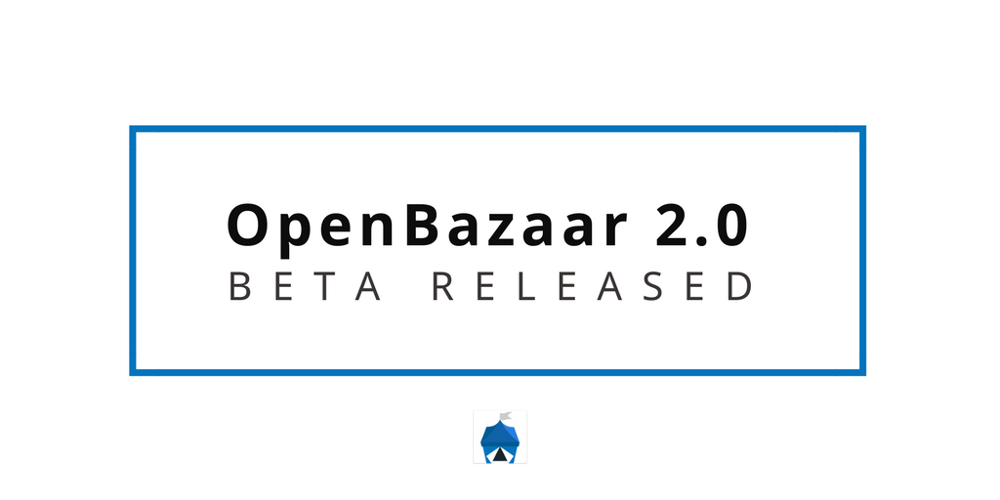
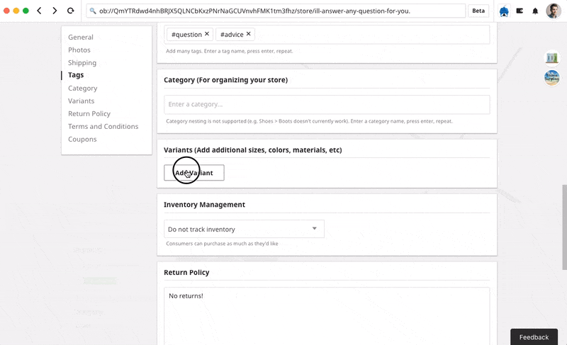

After a month in alpha testing, the OpenBazaar 2.0 beta has now been released. You can download the beta now. If you try the beta, please note the warnings and follow the guidelines and tutorial on the beta page.
The beta uses real Bitcoin and real listings.
If you use the beta and run into a problem, please report the issue in the OpenBazaar 2.0 beta Megathread on our subreddit, or use the built-in “Feedback” button in the client.
Known Issues
There are a few known issues with the beta that we are working to fix before the full release. Please be aware of these issues if you test the beta.
- Fee estimation is tricky business and currently tends to estimate too high. We’re working on a fix.
- Moderated payments should only be used for higher-value transaction, since they use multisig and require two transactions, doubling the Bitcoin fee paid and reducing the final amount the vendor receives. If the transaction is small enough, moderated payments (and dispute resolution) won’t work at all. We will soon introduce a limit preventing users from selecting moderated payments under a certain amount.
- You may see the error “Too many files open” on OSX or Linux. Usually if you wait a few minutes and try the action again, this issue resolves itself. IPFS is already working on a solution to this issue, and we’ll implement it as soon as possible.
New features
OpenBazaar 2.0 includes many significant improvements over the first version.
Offline stores
Because this new version is built on IPFS, OpenBazaar stores can now be accessible to buyers even when they are offline. Stores and listings can now be re-seeded by other OpenBazaar users, meaning that if a store is seeded then buyers can purchase their listings even if they are offline.
Search
Third party search providers are now accessible from within the client. Search results are much faster and more accurate than they were before.

Tor
You can now use Tor with OpenBazaar 2.0 for more privacy. You can follow these instructions on Windows; instructions for OSX and Linux are here.
Vendor tools
This new version of OpenBazaar includes lots of added features for vendors, including inventory management, expanded shipping options, variants, and more.

Do you want to help build this with us?
Download OpenBazaar right now to start buying or selling in minutes or just see what's for sale at OpenBazaar.com.
Developers, join us on Github to contribute to this open-source project!